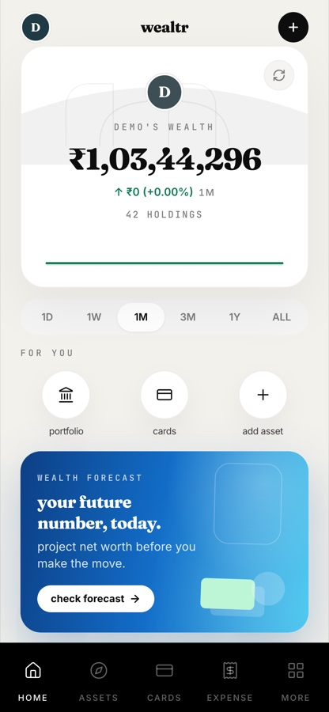

wealtr
A personal-finance app that pulls a whole financial life — crypto, equities, ESOPs, unlisted shares, EPF and bank balances — into one live net-worth number. Designed and built end-to-end, shipped on iOS, Android and web.

The brief
Most people's money is scattered across a dozen apps — an exchange here, a broker there, EPF and bank statements nobody opens. The real number, "what am I actually worth?", lives in a spreadsheet, if anywhere.
wealtr had to collapse all of that into one calm, trustworthy place — and feel less like a trading terminal, more like something you'd actually want to open.
The approach
An editorial finance system: a serif net-worth hero, generous whitespace, and dense data organised so it reads at a glance instead of overwhelming.
One design language stretched across a web dashboard and native-feeling iOS & Android apps — same clarity, adapted per device.
What it had to do
- One number, zero spreadsheets — a whole financial life in a single live net-worth figure.
- Make dense data calm — finance that reads as editorial, not a Bloomberg terminal.
- Work everywhere — desktop, iOS and Android from one design system.
- Look ahead — don't just report the past; forecast the future number.
The process
Aggregate
Pulled crypto exchanges, equities, mutual funds, ESOPs, EPF, unlisted shares and bank balances into one model.
Normalise
Reduced everything to a single live net-worth number with allocation, history and change over time.
Visualise
A calm dashboard — net-worth hero, target-vs-actual allocation donut, lifetime chart and activity feed.
Ship
Native-feeling apps on iOS & Android, plus a wealth-forecast that projects your future number before you move.
The same clarity, in your pocket

What's inside
- Net-worth overview with target-vs-actual allocation
- Lifetime net-worth chart with range switching
- Crypto, equities, mutual funds, ESOPs, RSU, EPF, unlisted & bank
- Expenses, subscriptions and credit-card tracking
- Wealth forecast — project net worth before you make a move
Why it matters
wealtr is the clearest proof of the full-stack range: data pipelines, a real design system, native apps, and data visualisation that stays calm under a lot of information.
It's exactly the shape of work a fintech, analytics or dashboard-heavy product needs — end to end, from the query to the pixel.
Visit liveNote
The screens shown use wealtr's built-in demo account — real UI, seeded sample data, and no personal financial information.